-
Login to GitHub, or create an account if you don't have one.
-
Navigate to the NIST
Privacy Engineering Collaboration Space on GitHub.
-
Click the “Fork” button.
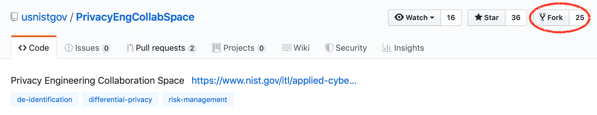
-
Navigate to either “tools” or “use-cases”, depending on the type of
your contribution. (Next steps are shown for “tools”.)
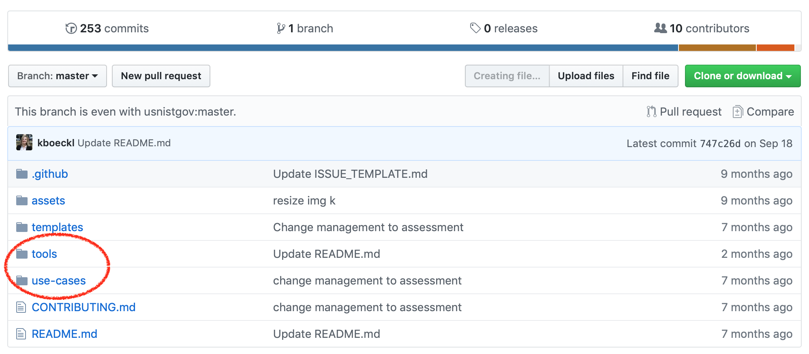
-
Navigate to either “de-identification” or “risk-assessment”, depending
on the type of your contribution. (Next steps are shown for
“de-identification”.)
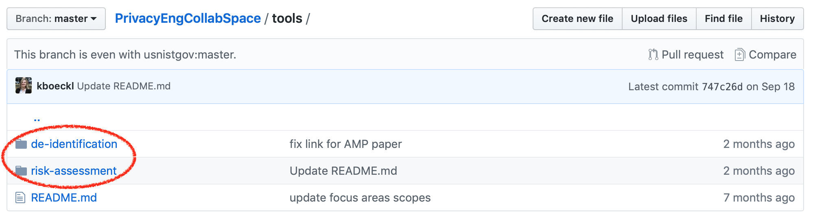
-
Click the “Create new file” button.
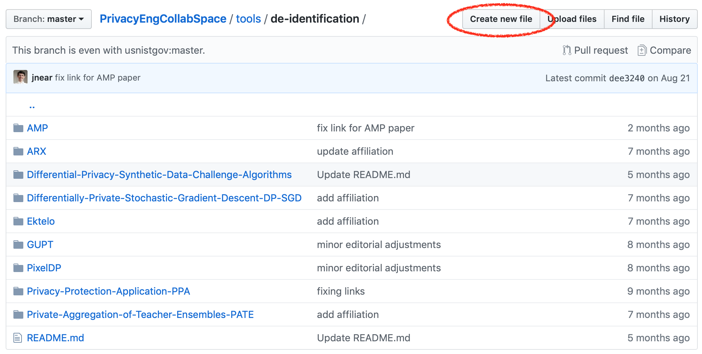
-
Type in the prompt the name of your contribution followed by a “/README.md”.
The name you typed before “/” will automatically get added to the path,
and the prompt will just show “README.md”.
(Next steps are shown for “Duet/README.md”.)
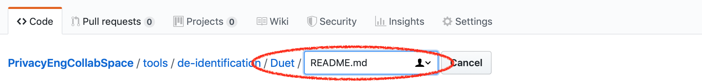
-
Populate the “README.md” below by copying and then completing the relevant template: the tool
template or the use case template. (Next steps are shown for Duet contribution.)
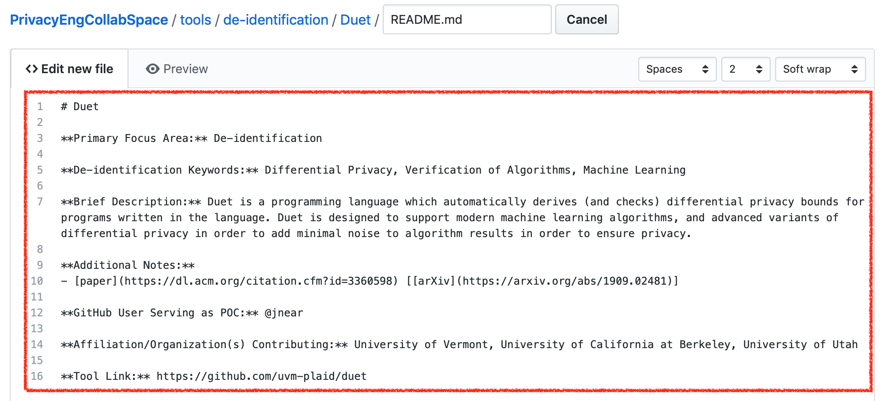
-
Click the “Commit new file” button.
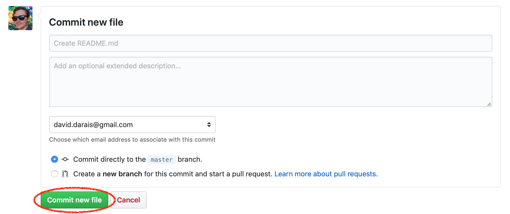
-
Navigate up one directory level to either “de-identification” or
“risk-assessment”. (Next steps are shown for “de-identification”.)
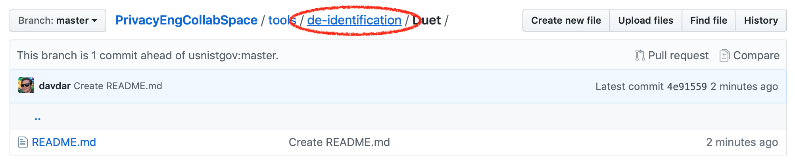
-
Click the edit button for the top-level “README.md”.
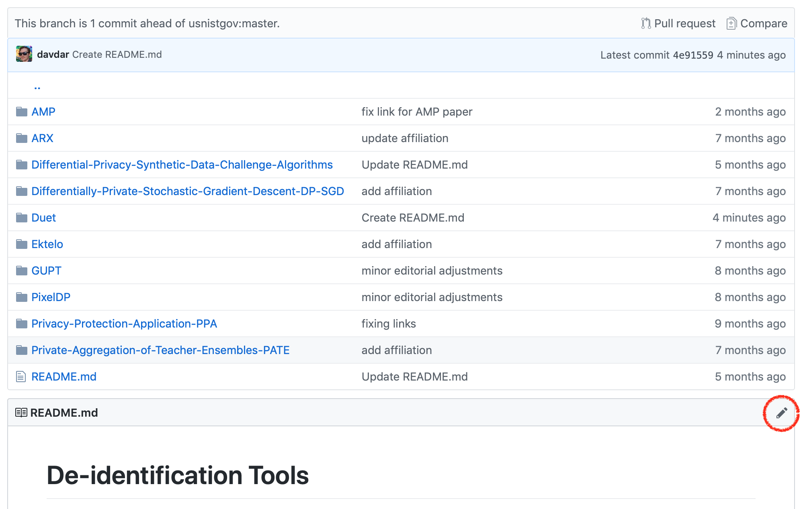
-
Add an entry to this file which reflects your contribution and
maintains alphabetical order for all contributions.
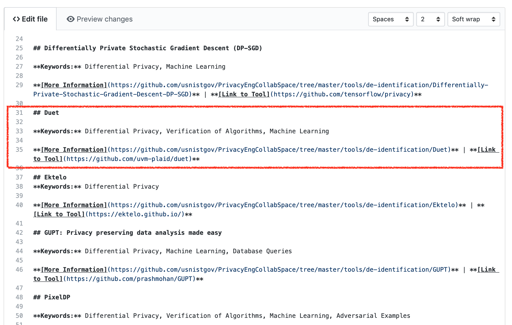
-
Click the “Commit changes” button.
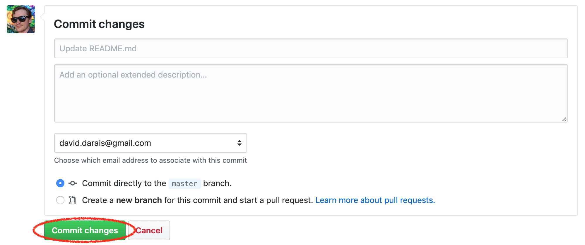
-
Navigate to the root of the project “PrivacyEngCollabSpace”.
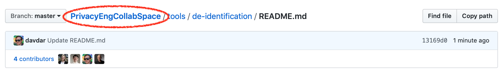
-
Click the “New pull request” button.
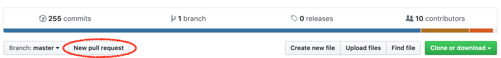
-
Review your contribution and then click the “Create pull request”
button.
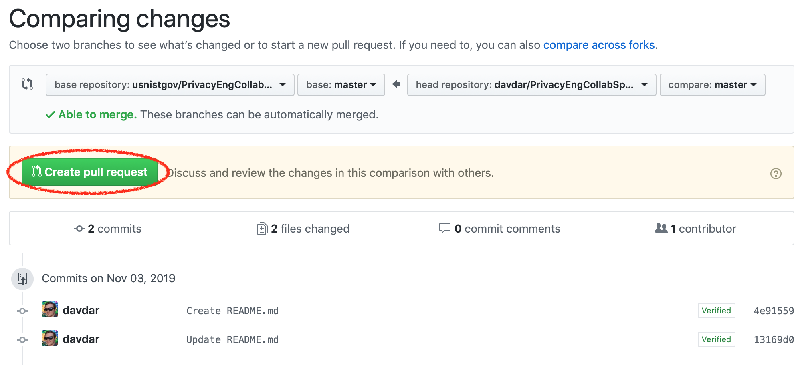
-
Enter the name of your contribution as the title, and add a short
one-sentence description of your contribution, as well as any
additional notes; then click the “Create pull request” button.
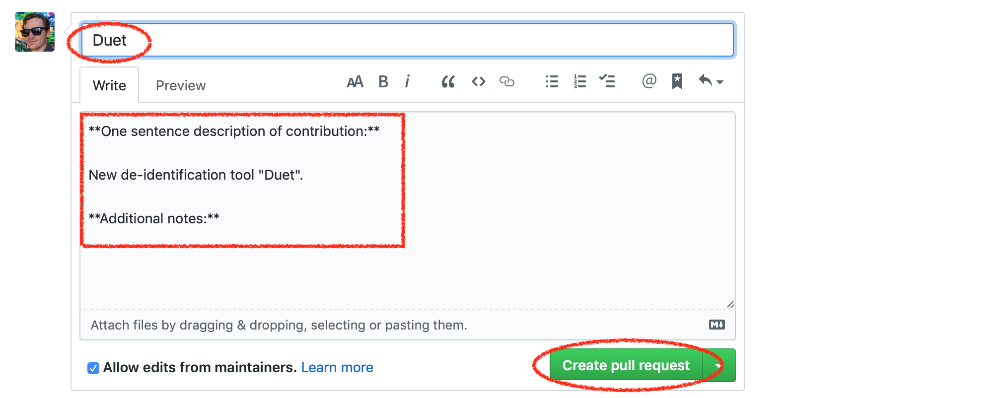
-
Moderators will now review your pull request and may provide comments
or suggestions before it is accepted.